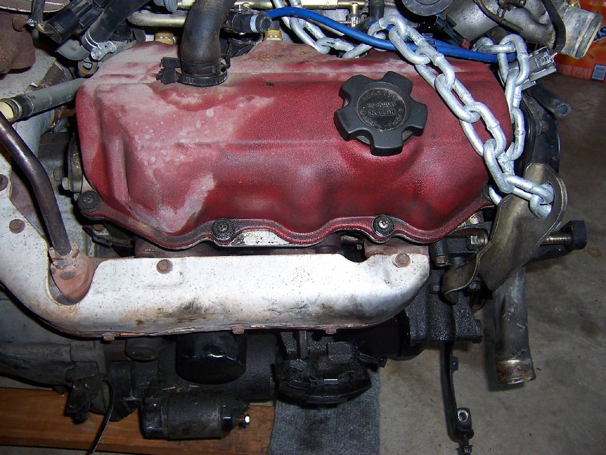
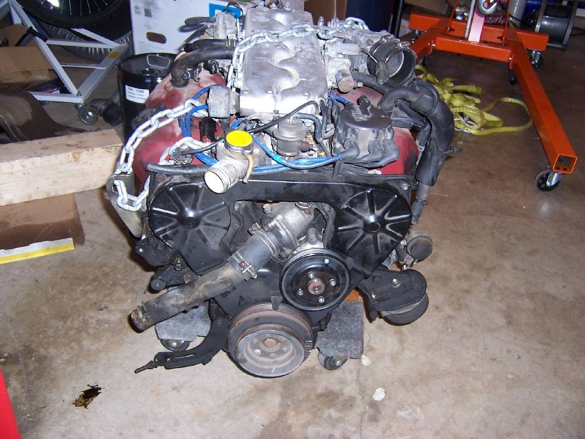
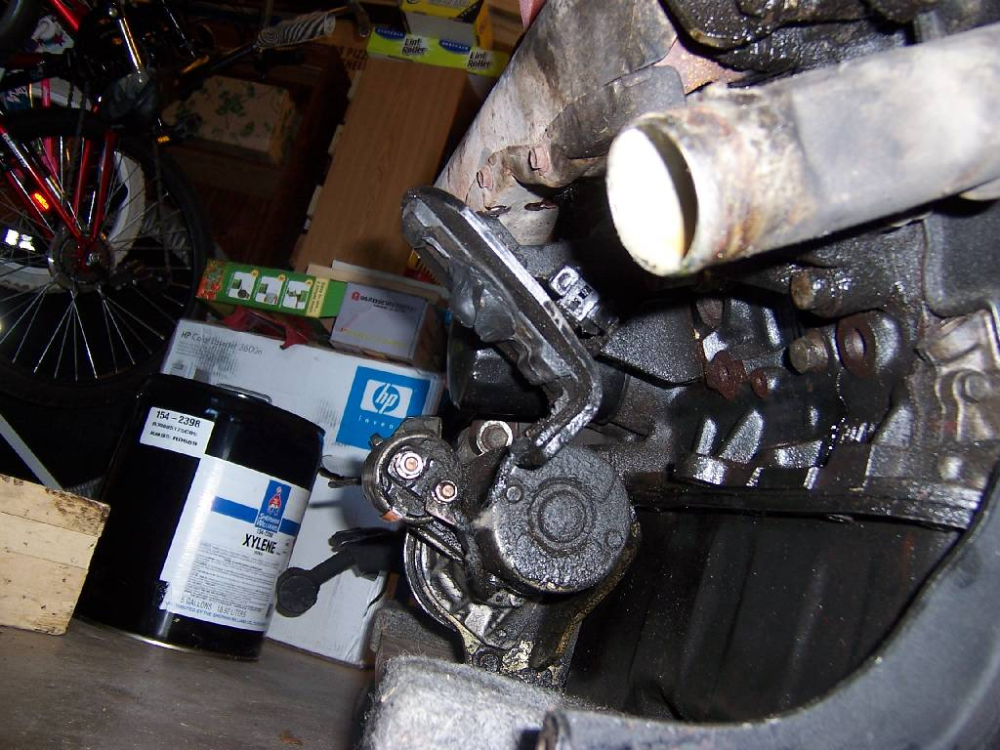
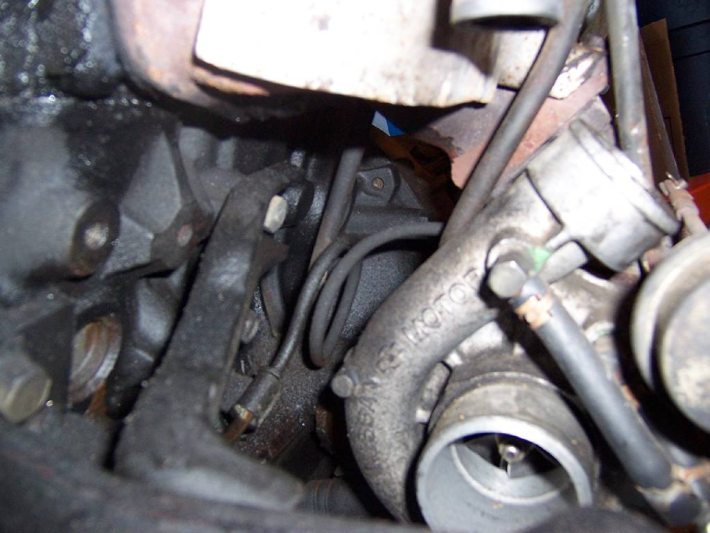

-
Most (well none of you) know me. This is my latest project car and I figured you might be interested, this site was recommended to me from a guy on youtube. This is how I did this swap.
So here is a summery for my entire 86 Z31 300ZX Turbo VG30ET to VG33et swap. This should also give a good reference for anyone that wants to do this swap and I do think this is a good swap to do. This is based on doing the swap with a VG30et parts engine, doing it without a parts engine is a WHOLE different can of worms and frankly not worth the time or effort or the extra $$$ it would cost IMO. You could use a VG30e as a parts engine as well if you had to, you would have to source the turbo parts of course but that is easy compared with getting all the other little parts you need to make the VG33 work in a 300zx
I will have a parts list at the end of this and a lot of extra pictures I didnât feel a need to post before just so that they are there for others that might want them. These pictures should be up pretty much forever.
First off a link to another site for this swap: http://forums.nicoclub.com/zerothread/337554 READ THIS BEFORE READING THE REST OF THIS THREAD! IT WILL HELP YOU UNDERSTAND THIS THREAD!
Here is the above post in quote form, all credit for the quote goes to âbimrtechâ
Just wanted to put this information all in one spot.
Big Thanks to mtcookson for letting me know before hand some of the differences. I would not have performed this swap without his advice!
I just performed this swap and found a few more. I just want to clarify a few things for others interested in this swap.
From the bottom up.
The VG30 oil pan will bolt to the VG33 block
The a VG30 oil pump will bolt on the vg33 block and is needed if running the vg30âs oil pan as the pick up tube is in a different location from the vg33 pump unless you want to fab. the pickup tube.
The VG30 crank will work in the VG33
The VG30 crank will only work with the VG30 Oil Pump
The VG33 Crank will only work with the VG33 Oil Pump
If you plan on running the VG33 crank in your swap you will have to modify the pickup tube as read above again. The VG30 pick up tube will bolt to the vg33 pump but it will be in the incorrect place. I modified the VG30 tube to work in the vg30 pan with a vg33 pump. I also had to cut some baffling in the pan to make it work.
If running a vg33 oil pump the filter is attached to a extension bolted to the pump. This was in the way on my car. I was able to tap the oil pump with ¼ NPT tap and run fittings to a remote filter housing. If you are stuck with the vg33 crank as I am, this must be done if the filter housing is in the way. You can not run the filter on the side of the block if using this oil pump. I suppose you could if you fabed a loop for the two holes in the side of the oil pump, but if you are going to do this, you might as well run a remote oil filter.
Crank pulleys are not interchangeable.
Water pump is a bit different. VG30 was shorter than the vg33.
I ran the water pump that went with the crank so the belts would line up.
The t-stat housing on the VG30 will not bolt to the vg33 block as there is casting material in the way of the housing. You may be able to grind, I did not try.
The vg33 t-stat housing outlet puts the lower hose connection at an angle, not straight out as the vg30 housing did. This forced me to fab up some creative lower hose connections.
T belts/cam gears/crank gears must be for the crank you are running.
If VG30 crank sprocket you must use vg30 cam gears/ t-belt
If vg33 crank sprocket you must use vg33 cam gears.
The cam gears are interchangeable with the cam
VG33 gears will work on a vg30 cam.
The intakes are interchangeable.
The flywheel from a vg30 will bolt to a vg33 crank.
The cams from a vg30 will work in a vg33 head.
The valve springs from a vg30 will work in a vg33 head.
The transmission from a vg30 will work on a vg33 block.
Mounts are the same also.
The vg30 distributor required some time on the grinder. An angle must be made at the base of the distributor as the clamping bolt did not go straight down as on vg30 heads. On Vg33 heads this bolt enters at an angle.
mtcookson added "On the distributor, there should be plate that bolts to the head. The distributor bolts to that plate. You should be able to remove the plate from one head and put it on the other to go with the distributor you're using. "
Joe
And a good read for any Z31: http://z31.com/faq/turbo.faq.shtml
Link to full build thread of this swap http://www.300zxclub.com/showthread.php?t=156768
Quick back story, found a MINT condition 300zx a few months back that had a blown motor (and he blew it good to, pic later) from running 15+psi on a hot Texas summer without an intercooler and on a bone stock engine in every way.
The rest of the car is MINT, only 60k miles it. So i picked the car up planning to replace the engine and use it as a nice daily driver.
While looking for engines i found that getting a turbo engine that i would trust was not easy. But it was then suggested that i do a VG33 swap. Looked up what little info there is on it and decided that is the engine for me. They only cost slightly more but they are a lot newer, easier to find and less miles.
The VG33 seems to fit my goals perfectly.
Reliable: Check
Easy to find: Check
Cheap: Check
Will have good power at stock settings: Check
Can get ~250rwhp with by just raising the boost slightly and still be 100% reliable: Check.
Later when i have $$$, i can get 400+hp: Check
So i got a VG33 from a 98 pathfinder with 80k miles on it.

Engine looks nice and clean and other then a broken coolant neck everything seems to be in tip top shape. The coolant neck from my old engine should fit so i am not worried about that.
So I went outside and was planning on just looking at the old engine and starting to get it ready to pull out. Before i knew it i had the engine on a dolly, so sorry no pics of the pull. Didn't plan on actually doing it, just got carried away.
Here are some with the engine out of the car, there is oil EVERYWHERE from when he blew the block, got my work cut out cleaning that up.
//www.pballandmore.com/images/100_2590.JPG" alt="" />
And here are just 2 of the cracks in the block. The hole actually has a piston and rod sticking right behind it that the picture doesn't show.
He blew it good, i will give him that.
Ok, started pulling the engine apart and i have to say he REALLY blew this thing in a grade A way! And i have not even got inside yet!
Got the intake pulled off fine:
Then took off the valve covers, looks like the top end escaped any damage for the most part, at least the cams seemed to which is all i care about.
Then started on the exhaust manifolds, and found this after pulling off the heat shield:
From the looks of things he ran REAL lean in the front cylinder (which is also the one that blew) and not so hot on the other side, causing the manifold to crack slightly.
When removing the Turbo oil feed line the block cracked again! and i also noticed that the oil feed line is ruined, i also need to find another one of those.
So I called around on Car-part.com and tracked down a new oil pan as the old one was trashed and a new exhaust manifold. Skipping ahead some but I ended up getting the Turbo oil feed line from Nissan for $75 as I could not find one used.
So at this point I went ahead and started getting parts together to get ready for the swap. I ordered a DXD Stage 1 Clutch from here: http://www.z31parts.com/drivetrain.html Took a week or so to show up but it is a real nice clutch and now that I have used it I have to say it is VERY streetable yet will hold almost 400ft/lb of torque. It is actually almost too streetable for me, I have not had a car with a true street clutch in so long it is odd to drive something with a long engagement point and a soft pedal.
I also ordered up a VG33E complete gasket/seal kit from ebay. I prefer the gaskets on the VG33 vs the VG30, like metal intake/exhaust gaskets and overall better design. The only one that wonât work that I came across is the front main seal, the VG33 seal is bigger then the VG30 (and also why you canât use a VG30 crank pulley with a VG33 engine and thus canât use VG30 accessories with a VG33 engine without swapping cranks like I am doing).
My oil pressure sensor broke when removing the old engine so I had to get a new one, not a big deal.
Ok, so at this point I had most of the parts to get started with the swap over (in my case I got a new crank to swap into the VG33 block but you could use the crank from a VG30 you had). So started pulling the old engine apart.
Holy DANG the PO did an A++++++ job of blowing this thing! I have NEVER seen an engine blow quite like this!
First off i pulled the drivers side valve cover, it actually looks almost new under there. Pulled that cam without any problems.
So then pulled the passanger side, totally different in there, Dirty burnt oil sludge everywhere. And while pulling the cam i noticed that he even managed to break a head bolt!
Then when really looking at the damage i notice that the block has all but split in half!
" alt="" />
You can see the broken head bolt there.
And that crack you see in the block, it starts on 1 side of the engine and oes ALL the way around to the other side! 1 long contentious crack! Never seen that before. It spiders out in a few places as well.
Those with a good eye will also notice that when i tried to remove the crank pulley, instead of coming off, it decided to just snap off. Let this be a warning to all of you, GET A PULLEY PULLER when pulling the crank pulley! You will also need to get some bolts from the hardware store to use with it, take one of the bolts off the crank and take it with you to find the right threads, it is metric.
I then got the oil pan pulled off and he really did a good job blowing this motor! There was more of the bottom end in the oil pan then in the block i think!
Just from the little i looked up in there it looks like he blew almost every piston and the #5 rod got thrown. I know at least 2 pistons were blow on top of the thrown rod. Could not get any good pics up in the engine but here is what i did get:
On the up side, i have got the old engine stripped of all the parts i need and they all appear to be reusable except the crank which I already had a new one ready to go.
Also started pulling apart the new VG33. Starting on the bottom end and working my way up on this one. I have to say i was impressed with how clean it was under there. Other then some sludge from sitting for who knows how long, all the bores/bearing surfaces look like new! and i could feel some good compression just turning it by hand.
So I went to a local engine builder to pick up all the parts for the crank swap at this point. All new main bearings, New rod bearings, assembly lube, VG30 Water pump, VG30 timing belt, VG30 timing belt tensioner, Black RTV sealent, New spark plugs (get a cap and rotor if yours are worn as well), I already had one but if you donât, get a Haynes manual.
Then set about pulling the bottom end of the VG33 apart. Not that hard, just took my time and used the Haynes manual to do it (if you donât have one, GET IT BEFORE DOING THIS!!!). Pulled off the main bearing cage, I left all the bolts in there holes and carefully set it aside on some cardboard
So I then pulled the old crank out, easy enough. I pulled the rod caps one by one and left the bolts in the holes once again. I then had another piece of cardboard, I then stuck the rod caps into the cardboard with the bolts in the order and direction they came off. This way it would be easy to reinstall them in the exact same place they came off.
Cleaned the new crank REAL good and then came the hardest part. Trying to get the new one in the block with allt he pistons/rods still in it. Ended up using electrical tape around the rob studs so they would not hurt the bearing surfaces and then slowly wiggling them into place. Take your time here, it is possible, I was doing it by myself, if I had an extra set of hands it would have been MUCH easier. Once you get all the rods lined up with the crank and the crank is resting on the main bearings (you did remember to install the lower main bearings first right?) it is pretty easy.
Then before you install the main bearing cage get all the rod caps installed with the new bearings, be sure to clean EVERYTHING, with break cleaner so it is SPOTLESS. VERY VERY VERY important. Once you have all the rods installed spin it a few times to make sure they are on right with the nuts hand tight. Then torque it down to specs (use the Haynes manual).
Now install the main bearing cage and torque to spec. And there you have it, the crank install is done and the hardest part of the swap! Took me about 4 hours to do by myself and in 105 degree heat.
I ended the night getting the rear main seal installed (VG30 and 33 the same). And the oil pump installed (oil pump bolts right up, though the gasket is a little different the VG33 gasket still works fine). The front main seal IS different between the 33 and 30 so i had to reuse my 30 seal. It looks in good condition though.
Then got a good bead of RTV and bolted the oil pan on. Let that dry overnight and will get out there and work on it some more today, got my clutch in as well.
So the bottom end is done, now for the top end and external stuff.
Here are some pics of the VG33 at during this:
I then got out there and finished up the top end. Got the cams swapped out and all the top end seals/gaskets. So far everything is bolting right up without any problems. Use the hyanes manual for the cams, it is quite easy to do.
So that takes care of all the internals, just the external stuff now. So hard part is done!
At this point I then started swapping over all the external parts, quite easy when you have a parts engine, no idea how you would do it without one for a reasonable price. Just took my time and bolted everything to the same holes on the new engine.
I got the clutch/tranny installed fine and started with the rest of the external stuff. When i got to the oil filter I found I needed a few more parts.
On the old engine the oil filter threading thing is right here:
The new one has all the same holes but doesn't have the threaded bolt thingy to screw the oil filter onto.
So I had to order the threaded oil stud and relief valve from Nissan, not a big deal just a part you will need. Be sure to use RED loctite when installing the stud into the new block.
Now I got to the intake (make sure you swap over the T-stat housing before doing the intake as you canât get to it after the intake is installed). I just took the complete lower/upper intake from the VG30 and moved it to the VG33, this way I didnât have to mess with the injectors or anything. Bolted right on.
i did run into the first non-bolt on problem though. Of all things it is the exahust manifold. The VG33 uses larger studs then the VG30. The turbo manifold actually fits fine on the front 2 cyclinders on each side but for some reason the back set of stud holes on each side is slightly too small.
So going to have to find the right drill bit and make them bigger. Not a big deal but does need to be done. I just got a 1/2â drill bit and drilled out the back holes. After this it fit fine over the studs.
The Nuts on the VG33 had a âlipâ on them though which makes installing the manifolds interesting. You have to âwalkâ the nuts on so that the lip sits in this recess on the manifold
Then walk all the nuts on together, those 2 middle nuts on the turbo side were the only problems, all the rest went on easy. It does bolt down fine though, just have to take your time.
Another note, that site that was linked to earlier says that the VG30 t-stat housing won't work in the VG33, this is not the case, mine bolted right up no problem.
I am planning on leaving the intake plenium off till i get the engine in the car for the simple reason of it being easier to hook up all the eletrical connections with it off.
Otherwise here it is ready to install:
Got out there today and started getting the engine put back in the car.
Washed the engine off as good as it would get, got all the built up oil off but the oil stains are there to stay it looks like. A lot better then before though.


Then started installing the engine. Got it in the car easy, then spent 2 hours just trying to get the stinking oil pan past the steering rack. Then for no reason it just slip past the rack and i made sure it didn't come back up. Once i got it past it dropped right into place.
Bolted everything down and started on the wiring.
Ended the night with pretty much everything under the car hooked back up and ready to go and most of the stuff up top as well.
Nothing special to report about the install, everything went in as it should and bolted up as it should.
i am going to finish getting the last stuff hooked up, check everything 3 times over and then get some oil, filter, plugs coolant and all that jazz. Then get ready for the first start.
So I then got out there, finished buttoning everything up and checked it all out. Everything looked good and tried starting it, and it started right up! Timing was way off though. So corrected that and the next day took this video of starting it up and actually letting it idle.
http://www.youtube.com/watch?v=3u_UTDIs1uA[/video]]
After it idled for a little bit I saw some oil on the ground, long story short I had installed the drivers side cam seal too far into the bore and it leaked. Replaced that and this time installed it flush with the surface and it was fine. I also didnât tourqe down the oil pump enough the first time and it had a small leak there as well. Careful with it though, you DO NOT want to strip those bolts.
And that is where it sits now, still breaking it in and no problems yet. Will put it on the dyno as soon as it is broken in and report back!
And there you go, that is my story of the VG30et to VG33et swap in my 300zx.
Link to full thread: http://www.300zxclub.com/showthread.php?t=156768
Here are some finished pictures after the first test drive, cars needs a bath bad but you get the idea:


Now for that parts list, this is all the parts I can remember I needed to buy had my parts engine been in perfect condition, you will obiously have to adjust the list to whatever you are using for a parts engine. For example I had to buy a LOT of odd ball parts due to my engine being blown so good (which ended up costing a LOT more then the engine which is why I say doing this without a parts engine at all is not smart).
But here is the base Parts list for a VG30 to VG33 swap with a VG30 parts engine:
Clutch (makes sense, you will have more power then a stock clutch can handle at this point and much better off doing it while you have easy acsess
Gasket kit (get a VG33 gasket kit, I got mine from ebay)
Front main seal for a VG30 (the VG33 front main seal wonât fit the VG30 crank)
Pulley puller (you can rent this as well but one way or the other you need acsess to one of these)
Main bearings (you are changing the cranks, of course you need this)
Rod bearings (ditto above)
assembly lube (You need to make sure you lube ALL metal on metal surfaces on the engine when putting it back together, use hyanes manual)
VG30 Water pump (must use a VG30 water pump with a VG30 crank)
VG30 timing belt (must use a timing belt for a VG30 with a VG30 crank, PS, the belts changed in the 90âs, so make sure you get a belt that is the same year as your parts engine)
VG30 timing belt tensioner (need to replace this while in there and it also has to match the crank)
Black RTV sealent, (need this for various places, the oil pan for one thing)
New spark plugs: NGK Part # 6953 More Info {V-Power Plug #BKR5E11} Plugs - SOHC {.039 gap} 2.00 a piece on rockauto.com. (well this is common sense, why use old plugs when they only cost $2?)
Oil filter stud (will need this to install an oil filter, slightly important)
Oil filter Relief valve (ditto above)
And that is all I can think of that you HAVE to have for this swap with a perfect condition VG30ET parts engine.
Now for costs, this is all based on having a good VG30ET parts engine that you can use all parts off of, prices will obviously go up for any parts you canât reuse like it did with mine.
Engine: $500 - $1000 depending on a lot of factors
Clutch $250
Gasket kit $75
Front main seal for VG30 $10
Pulley puller $20
Main bearings $40
Rod bearings $50
assembly lube $5
VG30 Water pump $50
VG30 timing belt $40
VG30 timing belt tensioner $30
Black RTV sealent, $5
New spark plugs: $15
Oil filter stud $8
Oil filter Relief valve $5
2 changes of oil $20
2 Oil filters $10
Transmission fluid $20
Anti-freeze $15
Mics other things I am not thinking of $100
So best case the total cost for this swap will be about $1250 - $1750
But the simple fact is things never go to plan, so real best case number I would put more in the $1500 - $2000 range. Then you have to add anything else you will need on top of the above part to that number.
Example, without even adding every little item I have spent over $3000 on my swap to do it right but that included a lot of other stuff non-engine related. So make sure you have the funds to finish what you start! But In the big picture it is a pretty cheap swap, for $1500 to get a nice low mileage engine with more power then stock and just as much reliability is a good deal IMO. Considering that when looking for a stock VG30ET engine they were going for $750 - $1250 for JUST the engine. Parts engines were going a LOT cheaper though FYI.
I will be going to the dyno after it is broken in and see what it can do and report back. So far though just driving it easy I can say it is a TOURQE monster! With just 1/3 throttle in 5th at 50mph it wants to jump up and go. Breaking this in is going to be hard.
And there you have it, my VG33et swap.if there is anything else you would like to know or for me to add just let me know.
Here are a ton of extra pictures I had of the VG30 engine showing where everything went before I took it apart to make putting the new one back together easier:




ges/100_2623.JPG" alt="" />
http://www.youtube.com/watch?v=3u_UTDIs1uA[/video]]
When Guns are outlawed, only outlaws will have guns. -
Nice to see you over here ace. glad i could help as much as i could with the swap and glad to hear she runs.
he gives me shit all the time about the money i spend on my car but he simply doenst understand what type of "high" you get from watching a stock car transform into something alive with as much emotion and feelings as any human.Originally posted by PurePontiacKid -
Yep, runs quite nice too. It is going to be so hard to break this in without getting on it!New 2 Z wrote: Nice to see you over here ace. glad i could help as much as i could with the swap and glad to hear she runs.When Guns are outlawed, only outlaws will have guns. -
[quote]Texas_Ace wrote:Yep, runs quite nice too. It is going to be so hard to break this in without getting on it![/quote:2vrtv586]Originally posted by New 2 Z:2vrtv586
for the clutch stop and go traffic, this is what I've been told works the best.
he gives me shit all the time about the money i spend on my car but he simply doenst understand what type of "high" you get from watching a stock car transform into something alive with as much emotion and feelings as any human.Originally posted by PurePontiacKid -
great postGone - 1988 Shiro
2004 BMW 330Ci
2005 BMW 330i
1991 Twin Turbo Z's (Red and Black)
http://www.E46Turbo330Ci.com -
wow, that block was toast >< good info! welcome to the club and it was I who posted about this place glad to see you came over and good luck on your build oh later on you might want to swap the pathy intake onto the engine.
glad to see you came over and good luck on your build oh later on you might want to swap the pathy intake onto the engine.
-
Bravo Sir. Wish I had picked up a VG33 when my last engine went, but the one I got was only ten bucks.
The next engine though, will benefit greatly from this post! Thanks!
-
I have NEVER seen a VG30 come apart like that!!!! Are you sure it didn't just throw a rod really really bad? Do you have any pics of the fried piston/pistons perhaps???
Very good write up though. Welcome to z31performance.com!85 Z31 6.0 LSX turbo 766whp/792wtq
04 GTO, LS6, big cam, porting, N20… underway for summertime daily driver. -
I have never seen any engine come apart quite like that. It looks MUCH worse in person.New 2 Z wrote:
for the clutch stop and go traffic, this is what I've been told works the best.
That might be the case but i do my ever best to NOT be in any kind of stop and go traffic, and sorry but the clutch is not worth it lol. I do 90% city driving anyways so it will get broken in one way or the other.
Well For $10 i would get a stock engine too.Chrisw_2003 wrote: wow, that block was toast >< good info! welcome to the club and it was I who posted about this place glad to see you came over and good luck on your build oh later on you might want to swap the pathy intake onto the engine.
Yeah, that old VG30 was blown lik i have never seen an engine blow before!
I thought about doing the pathfinder intake but the car is so nice that i just want to keep it near stock and use it as a DD. Plus i have AC and it didn't look like it would work with the AC in there.
The pathfinder intake IS for sale though, upper and lower parts of it. Plus anythign else anyone wants that i have left over.
vagabond wrote: Bravo Sir. Wish I had picked up a VG33 when my last engine went, but the one I got was only ten bucks.
The next engine though, will benefit greatly from this post! Thanks!
I have to say i highly recomend this swap, with a parts engine this is an easy and relitively cheap swap to do. the tourqe this thing has is AMAZING!
SATAN wrote: I have NEVER seen a VG30 come apart like that!!!! Are you sure it didn't just throw a rod really really bad? Do you have any pics of the fried piston/pistons perhaps???
Very good write up though. Welcome to z31performance.com!
Didn't ever actually pull the internals out of the block as i was too busy with the other engine but i might pull it apart before junking it just for kicks and giggles.
Glad you like the writeup!When Guns are outlawed, only outlaws will have guns. -
very informative post. glad you came here to share. i should have gotten the z31 crank out of my engine earlier and used all that stuff, but too late.
I hope the nitriding i did was worth the extra hardness.
and that VG30 came apart like a casting block. LOL -
Great post, love the pics and the VG33 info.It may not be a Z, but it's still got a turbo… -
Epic post good sir! Welcome to Z31P, and thanks especially since I'll be doing this same swap in the very near future.Chicks dig me, rust fears me. -
Nice work!!!Bolt on, fast, z31. You can only pick two.
Old weaksauce numbers: 391hp/433tq

-
The way i look at it is this, if you are doing this swap, there is a 90% chance you have a VG30 of some kind already. And no matter what you have to remove the VG33 crank wether you machine it or swap it. So i see no reason to go to all the extra work of making the VG33 work vs just swapping cranks.Careless wrote: very informative post. glad you came here to share. i should have gotten the z31 crank out of my engine earlier and used all that stuff, but too late.
I hope the nitriding i did was worth the extra hardness.
and that VG30 came apart like a casting block. LOL
But it can be done and should work fine, just a lot of extra work and $$.
By "nitriding" I assume you mean some form of cryo freezing? that should indeed help you out if you are going for the big numbers. It REALLY does add a LOT of streangth. Years ago when this was new a friend of mine and me sent in some disposable razors to be frozen, those things were no longer disposable, they lasted longer then the big $$$ razors you can get (this was a common example they were using back then to show it works BTW) they also used panty hose, supposedly it lasted 5x longer after being frozen. Never tried that one though…lolWhen Guns are outlawed, only outlaws will have guns. -
where in texas are youI hate wheel gap with a extreme passion

my build
viewtopic.php?t=2755
seller feedback
viewtopic.php?f=18&t=10430

Copyright © 2006–. All rights reserved. Privacy Policy